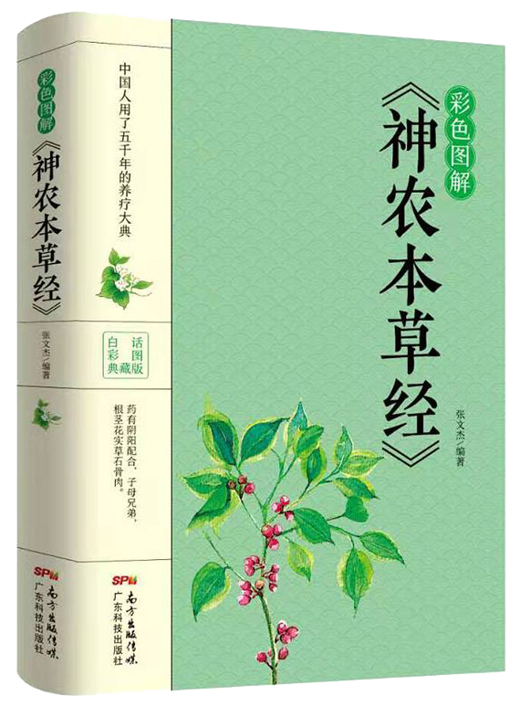

01
作者
汉时期众多医学家
02
归属类别
中医学类书籍
03
别名
《本经》
04
影响评价
古典医著
| 书籍简介
《神农本草经》又称《本草经》或《本经》，托名“神农”所作，实成书于汉代，是中医四大经典著作之一，是已知最早的中药学著作。《神农本草经》全书分三卷，载药365种，以三品分类法，分上、中、下三品，文字简练古朴，成为中药理论精髓。《神农本草经》记载了365种药物的疗效，多数真实可靠，仍是临床常用药；它提出了辨证用药的思想，所论药物适应病症能达170多种，对用药剂量、时间等都有具体规定，这也对中药学起到了奠基作用。相传起源于神农氏，代代口耳相传，于东汉时期集结整理成书，成书非一时，作者亦非一人，秦汉时期众多医学家搜集、总结、整理当时药物学经验成果的专著，是对中国中医药的第一次系统总结。其中规定的大部分中药学理论和配伍规则以及提出的“七情和合”原则在几千年的用药实践中发挥了巨大作用，是中医药药物学理论发展的源头。